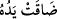

Bu arapların
“Eli daraldı” sözüne benzer. Mukâbili ise, kadir ve güçlü olduğu
zaman kullanılan “Gücü ve kuvveti genişledi” sözüdür. Çünkü kolu uzun olan, kısa
olanın ulaşamadığı şeylere ulaşır.
Melekler, Lût (a.s.)’da sıkıntı ve darlanma alâmetleri görünce onu teselli edip “ona”
kavminden bize bir kötülük isâbet etmesinden “korkma” ve hiçbir şeye üzülüp
“tasalanma! Çünkü biz seni de âileni de” kavmine inecek azabtan “kurtaracağız.”
“Yalnız, (azapta) kalacaklar arasında bulunan karın müstesnâ, dediler.”
34. “Biz, şüphesiz, bu memleket halkının üzerine, yoldan çıkmalarına karşılık
gökten (feci) bir azab indireceğiz.”
“Biz, şüphesiz, bu memleket” yâni Sodom “halkının üzerine, yoldan çıkmalarına”
ve fıskta ısrar etmelerine “karşılık gökten” toz ve çakıl yağdıran bir kasırganın çıkması
ve şehrin yerin dibine batırılması gibi “(feci) bir azap indireceğiz.”
Keşfü’l-esrâr’da kaydedildiğine göre, o tarihte Sodom’un nüfusu yedi yüz bin
civarındaydı.
“
(cezâ)”; azâb olunan kimseyi titreten, ızdırab ve üzüntüye sokan bir haldir. Bu
arapların “titredi, hareket etti” mânâsına gelen “
” sözünden alınmıştır.
Cebrâil (a.s.), şehri, içindekileriyle beraber kökünden kaldırdı; altını üstüne getirdi.
Lût (a.s.) kızlarıyla beraber oradan ayrılınca da kaybolan halkın üstüne ayrıca (gökten)
taşlar döküldü.
Allah’ın emri üzerine Lût (a.s.) beraberindekilerle birlikte kurtuldu. Ters yüz olmuş
kâfirler ise helâk oldu ve onların harap olmuş şehirleri insanlara ibret olarak kaldı.
Şöyle ki Hak Teâlâ buyurur:
35. Andolsun ki, biz, aklını kullanacak bir kavim için orada apaçık bir ibret
nişânesi bırakmışızdır.
“Andolsun ki, biz,” ibret alma konusunda “aklını kullanacak” ve düşünecek “bir
kavim için...” Bu cümle, ya “
(bıraktık)” cümlesine ya da “ (apaçık)” kelimesine
mütealliktır.
Bunda aklın şeref ve üstünlüğüne bir işâret vardır. Çünkü düşünen ve ibret alan
akıldır; o, insanı günahtan, mahzurlu ve tehlikeli şeylere düşmekten alıkoyar.